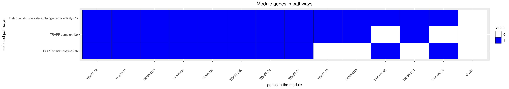

Back to main page
DREAM Module Identification Challenge – Consensus modules
PPI-STRING_Consensus_mod93
| Assigned name |
NA |
| Network |
PPI-STRING |
| Module ID |
PPI-STRING_Consensus_mod93 |
| Module size |
18 genes |
|
Module genes
This module comprises the following genes:
| Gene ID |
Gene Symbol |
Gene Name |
| 100128327
|
BET3L
|
trafficking protein particle complex 3 like
|
| 80006
|
C5orf44
|
trafficking protein particle complex 13
|
| 83445
|
GSG1
|
germ cell associated 1
|
| 112611
|
RWDD2A
|
RWD domain containing 2A
|
| 58485
|
TRAPPC1
|
trafficking protein particle complex 1
|
| 309678
|
TRAPPC10
|
trafficking protein particle complex 10
|
| 60684
|
TRAPPC11
|
trafficking protein particle complex 11
|
| 51112
|
TRAPPC12
|
trafficking protein particle complex 12
|
| 6399
|
TRAPPC2
|
trafficking protein particle complex 2
|
| 51693
|
TRAPPC2L
|
trafficking protein particle complex 2 like
|
| 10597
|
TRAPPC2P1
|
trafficking protein particle complex 2B
|
| 27095
|
TRAPPC3
|
trafficking protein particle complex 3
|
| 51399
|
TRAPPC4
|
trafficking protein particle complex 4
|
| 126003
|
TRAPPC5
|
trafficking protein particle complex 5
|
| 79090
|
TRAPPC6A
|
trafficking protein particle complex 6A
|
| 122553
|
TRAPPC6B
|
trafficking protein particle complex 6B
|
| 22878
|
TRAPPC8
|
trafficking protein particle complex 8
|
| 83696
|
TRAPPC9
|
trafficking protein particle complex 9
|
|
Functional annotation
Modules were tested for enrichment in functional and pathway annotations using two complementary approaches:
1. To select a small number of specific / non-redundant annotations for each module, a regression-based approach was used;
2. To obtain the complete set of enriched annotations, an extension of Fisher’s exact test that takes annotation bias into account was employed (Wallenius’ non-central hypergeometric distribution).
Most specific annotations for this module
1Regression coefficient
2Fisher’s exact test nominal P-value
3Annotation source (Reactome, GO biological process (BP), molecular function (MF) and cellular component (CC))
4GO category or Reactome pathway
5High-level branch of annotation tree
Gene membership

All enriched annotations
Gene Ontology
11Nominal enrichment p-value (Wallenius’ noncentral hypergeometric distribution)
2FDR corrected p-value (Benjamini-Hochberg)
Generated on: Thu Aug 30 17:24:19 2018 - R2HTML